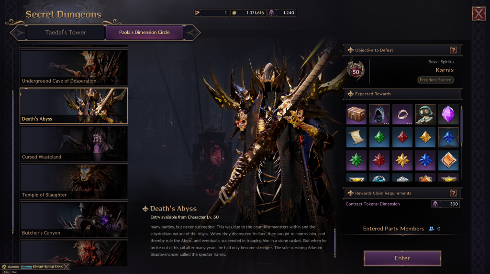
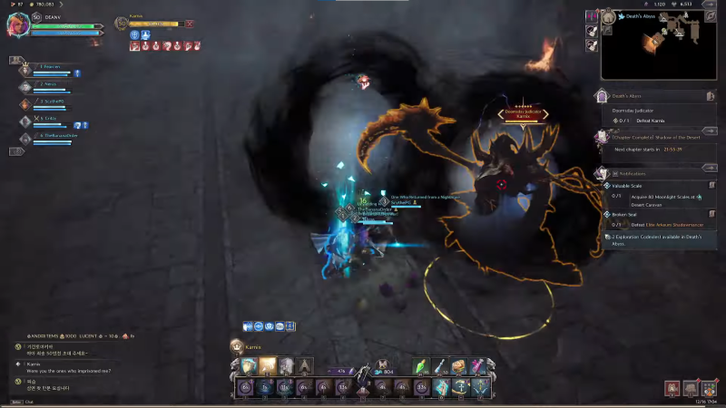
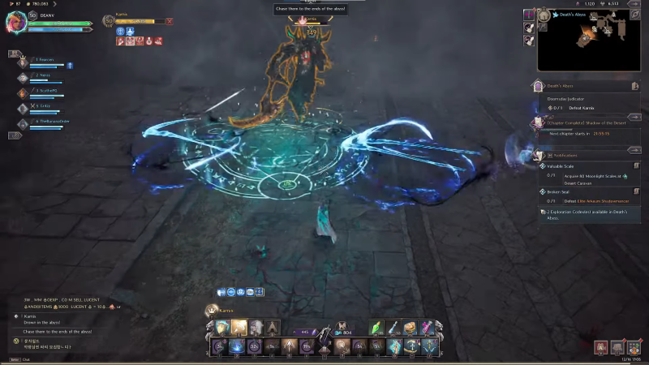
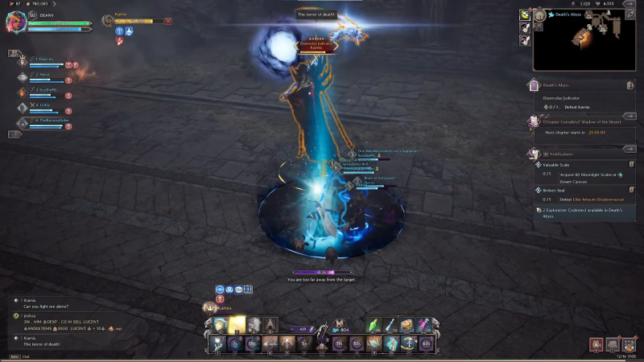

GUIA BOSS DUNGEONS LvL 50

DUNGEONS:
I - DEATH'S ABYSS
LOCALIZANDO KARNIX
Depois de derrotar com sucesso o Capitão do Elite Arkeum Riot Squad Captain, prossiga para a próxima sala, onde você encontrará o Doomsday Judicator Karnix.

HABILIDADES DE KARNIX
Ele possui cinco poderes que são utilizados durante a batalha. Aqui estão seus poderes para ajudá-lo durante a batalha.
PRIMEIRA HABILIDADE
Com sua primeira habilidade, Karnix desfere um soco poderoso que causa muitos danos. Ele começa girando sua foice antes de baixá-la rapidamente para causar danos massivos e realizar o controle de multidão (CC), que deixa os jogadores inconscientes. Uma curva rápida ou uma corrida rápida tirarão você do caminho desse ataque.

SEGUNDA HABILIDADE
A segunda habilidade de Karnix é lançar ataques básicos enquanto se teletransporta. O teletransporte utiliza sua habilidade inicial e percorre uma curta distância, surpreendendo os oponentes. Karnix lança três teletransportes e, em seguida, lança um ataque poderoso e imediato. Embora evitar esta mudança possa ser um desafio, a cooperação é crucial. Para manter o controle da situação, trabalhe com sua equipe para coordenar, virar e evitar a primeira abordagem.
TERCEIRA HABILIDADE
Para a terceira habilidade de Karnix, ele passa por uma breve fase de carregamento, girando antes de liberar rapidamente uma onda elétrica que causa dano de área de efeito (AOE) a seus inimigos. Para ficar ileso, ative uma habilidade de escudo assim que ele lançar o ataque. Isso o ajudará a evitar qualquer dano e a mantê-lo no jogo.

QUARTA HABILIDADE
Para a quarta habilidade de Karnix, ele desencadeia um golpe elétrico que marca seus oponentes. Uma vez marcado, ele libera foices giratórias que seguem o oponente marcado, causando dano significativo ao ser atingido. Você pode simplesmente fugir das foices que o perseguem para evitar sofrer danos. Durante o processo, Karnix se teletransporta para seus oponentes e lança um feitiço azul que atordoa os jogadores. Então uma dica é tentar mirar nos seus jogadores.
QUINTA HABILIDADE
Finalmente, a última habilidade de Karnix envolve marcar um inimigo com uma bolha azul. Após marcar seu oponente, ele carrega sua foice e se teletransporta rapidamente para o alvo marcado, balançando sua foice e causando dano considerável no impacto. Para evitar essa habilidade, sua equipe precisa entrar na bolha azul para evitar qualquer dano.
DROPS:
Ao derrotar o Karnix, você receberá as recompensas descritas no início de sua jornada no Abismo da Morte: LINK COM DROPS ATUALIZADOS! ! !
II - CURSED WASTELAND
Depois de derrotar os dois Vigilantes, é hora do evento principal da masmorra. Shaikal, o Elemental das Trevas Frenético.
HABILIDADES DE SHAIKAL
PRIMEIRA HABILIDADE
Um dos ataques mais fortes que Shaikal pode fazer é um grande círculo de névoa escura que causa danos aos jogadores ao atingir. Este ataque é completamente evitável através do bloqueio. Depois de ver o círculo roxo se formando, prepare-se para bloquear e o dano do ataque será negado.


SEGUNDA HABILIDADE
Este ataque tem como alvo o jogador mais distante do chefe. Se você for marcado com o orbe vermelho flutuando acima de sua cabeça, significa que um ataque está chegando. Fuja do seu grupo e espere até que o orbe vermelho desapareça. Isso significa que este ataque está prestes a formar uma habilidade de vórtice vermelho prejudicial . Assim que o orbe vermelho acima de sua cabeça desaparecer, fuja rapidamente para evitar danos.


TERCEIRA HABILIDADE
Esta terceira e última habilidade é um pouco mais complicada. Semelhante à habilidade do vórtice vermelho, um orbe roxo aparecerá acima da cabeça de um jogador aleatório. Assim que o orbe roxo desaparecer, isso significa que o próximo ataque AOE está prestes a se formar, que é uma névoa roxa onde Shaikal libera um longo fio de névoa escura na direção do jogador marcado. Este ataque pode ser totalmente evitado correndo imediatamente no sentido horário ou anti-horário na forma Morph, no entanto, isso significa que os jogadores devem observar Shaikal cuidadosamente para antecipar para onde correr.


DROPS:
Depois de derrotar Shaikal, os jogadores recebem os seguintes itens: LINK COM DROPS ATUALIZADOS! ! !
III - TEMPLE OF SLAUGHTER
CHEFE FINAL
O chefe final do Temple of Slaughter é o Rex Chimaerus.
Ao longo da fase de dano padrão do chefe, há alguns ataques a serem observados:
- Um ataque de salto no jogador com maior ameaça
- Cospe veneno à distância que deixa uma poça no chão
- Um golpe de cauda se você estiver atrás dele
Depois de algum tempo na fase, Rex Chimaerus seleciona um alvo para injetar veneno paralisante. Esse jogador tem que correr o mais longe possível do chefe e ter a posição do tanque entre o alvo e o chefe. Rei Chimaerus então libera três enormes bolas de fogo em direção ao alvo paralisado junto com um enorme spray venenoso à direita do chefe. Se feito corretamente, o tanque absorve o dano de duas bolas de fogo com um terceiro jogador interceptando a terceira bola de fogo. Então começa a próxima parte da mudança de fase.
Ao contrário do Temple of Roar, Rex surge em duas camadas de Air Pitons ao redor da arena. Um jogador tem que usar os Pitons para se agarrar alto o suficiente para pousar na plataforma acima de Rex. Assim que o jogador acima interagir com a plataforma superior, as quatro correntes ao redor de Rex serão desbloqueadas e sua equipe puxará as correntes ao mesmo tempo. Ao puxar a corrente, a água encharca Rex e a luta volta à fase padrão.


Depois de apagar o chefe, ocorre um curto intervalo onde você pode causar dano livremente e então as fases normais se repetem até que o chefe morra!
DROPS:
Depois de derrotar Rex Chimaerus os jogadores recebem os seguintes itens: LINK COM DROPS ATUALIZADOS! ! !